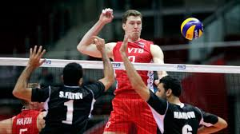

Il centrale o "centro" è un ruolo della pallavolo, chiamato in questo modo perché il giocatore attacca dalla posizione centrale o zona 3 della prima linea
Di norma il centrale in difesa, una volta concluso il suo turno di servizio, viene sostituito dal libero
Dmitrij Aleksandrovic Musèrskij
Makiivka,29 ottobbre 1988
Nazionalità Russia
Altezza 218cm
Peso 104kg
